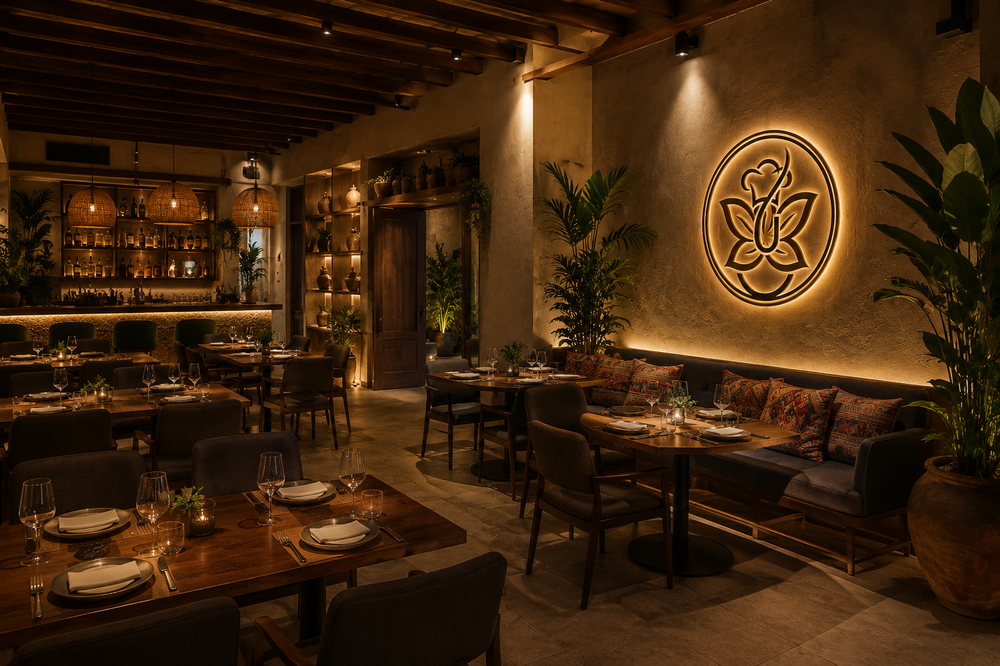
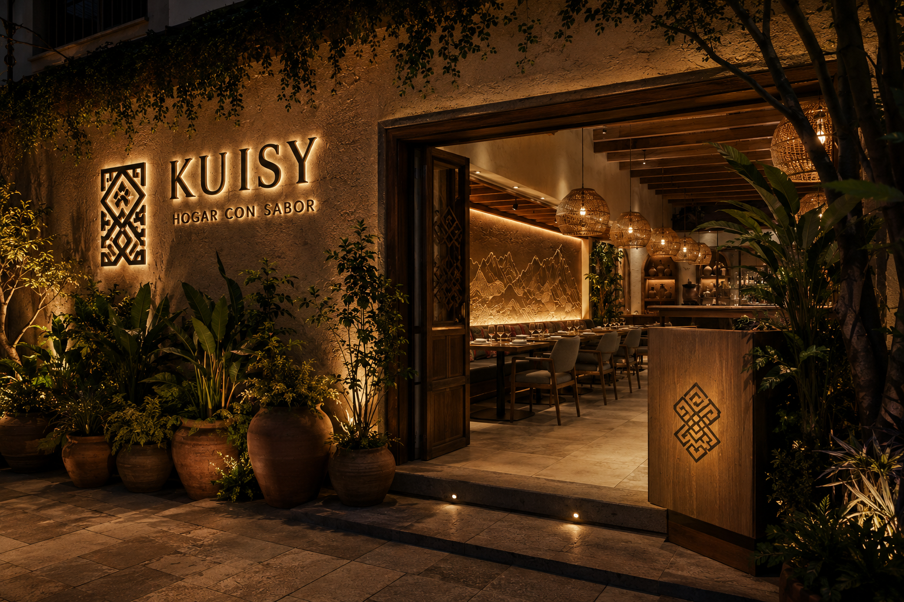

✦ Nuestra Historia ✦
El alma detrás de cada plato
KUISY nace en 2026 como parte del proyecto final estudiantil de informática de cuarto grado. Este restaurante ficticio fue creado por los compañeros Abdiel Capellán, Malbin Saldaña y Britany Severino, quienes decidieron unir creatividad, diseño y tecnología para desarrollar una página web moderna e innovadora inspirada en la gastronomía latinoamericana. El nombre KUISY proviene de la palabra quechua “kusi”, que significa alegría, felicidad y buena fortuna, reflejando la esencia vibrante y acogedora del proyecto. Además de presentar un concepto gastronómico llamativo, el objetivo principal fue demostrar y explotar los conocimientos adquiridos en el área de desarrollo web, utilizando herramientas de diseño, estructura de páginas, creatividad visual y organización digital. La inspiración artística del proyecto surge de la energía urbana y colorida de la Comuna 13, mezclando lo moderno con lo cultural para crear una identidad visual única. Cada detalle de la página fue pensado para transmitir una experiencia dinámica, juvenil y auténtica. Más que un simple trabajo escolar, KUISY representa el esfuerzo, la dedicación y la imaginación de un equipo de estudiantes que buscó convertir una idea en una experiencia digital creativa y profesional.
Conoce nuestra carta📍 Av. Abraham Lincoln 45, Santo Domingo
Visítanos en nuestro local y disfruta de una experiencia gastronómica única. Te esperamos con los brazos abiertos.

